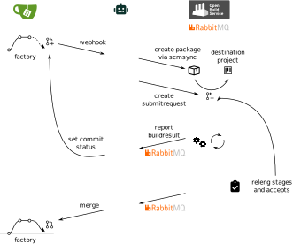

Git workflow setup¶
The current setup of the bot is schematically shown in the following figure:
The intended workflow is the following:
A contributor forks the repository on gitea, pushes their changes to their fork and opens a pull request against the factory branch of
rpm/$package.gitea triggers the bot via a webhook. The bot creates a new package in its home project using the
<scmsync>element and creates a submitrequest on OBS against the destination project. Optionally, it can wait for the package maintainer (= the maintainer or bugowner on OBS) to approve the pull request on gitea before creating the package and submitting the SR.The bot will continuously listen on OBS’ rabbitmq bus for package build results and submit request state changes. If the package is rebuilt, then it will update the commit status on gitea to act as a CI. If the submit request is accepted, then the bot will merge the pull request on gitea.